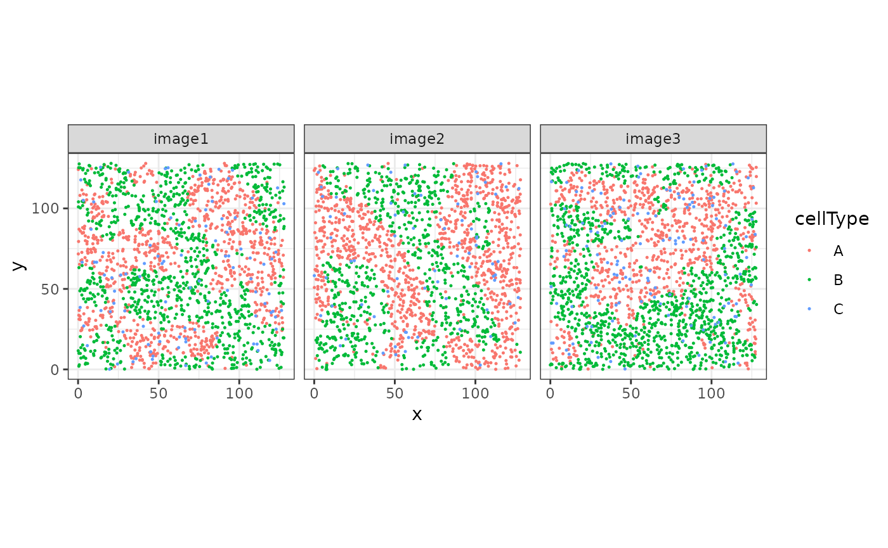
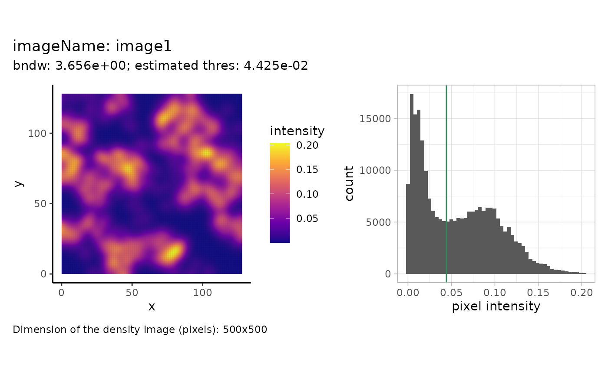
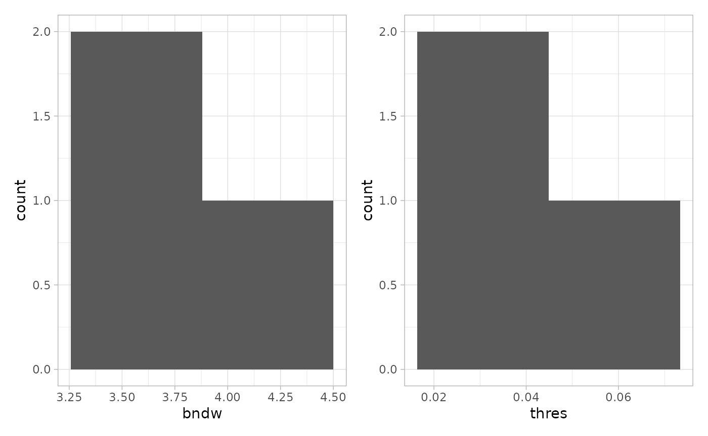
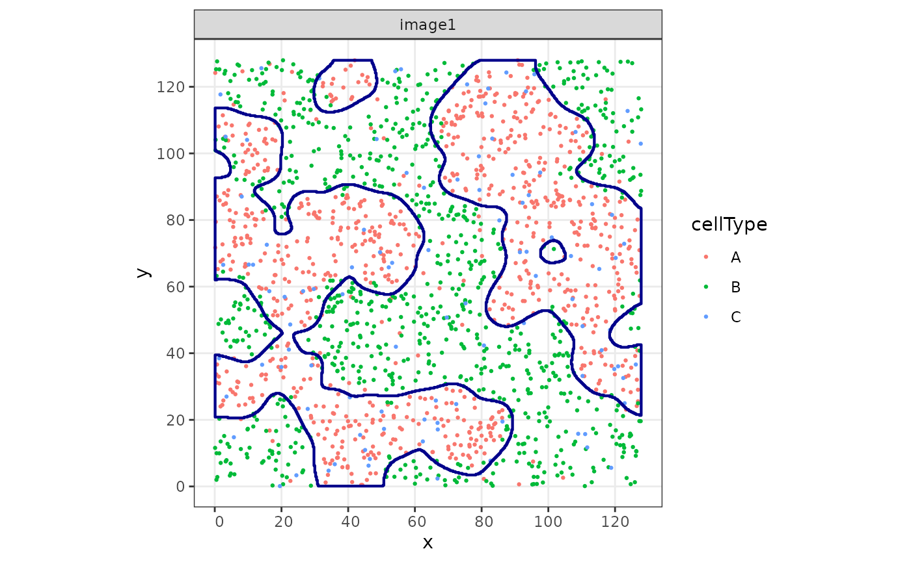
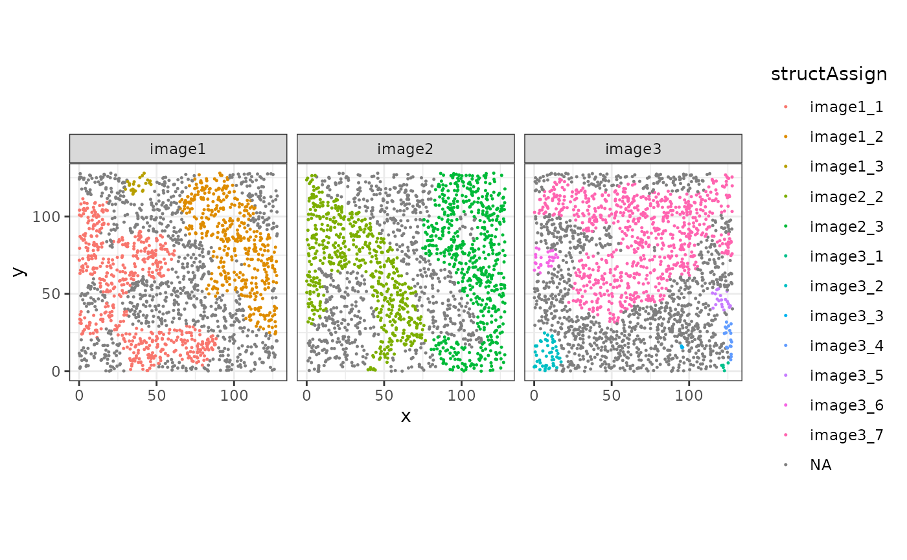
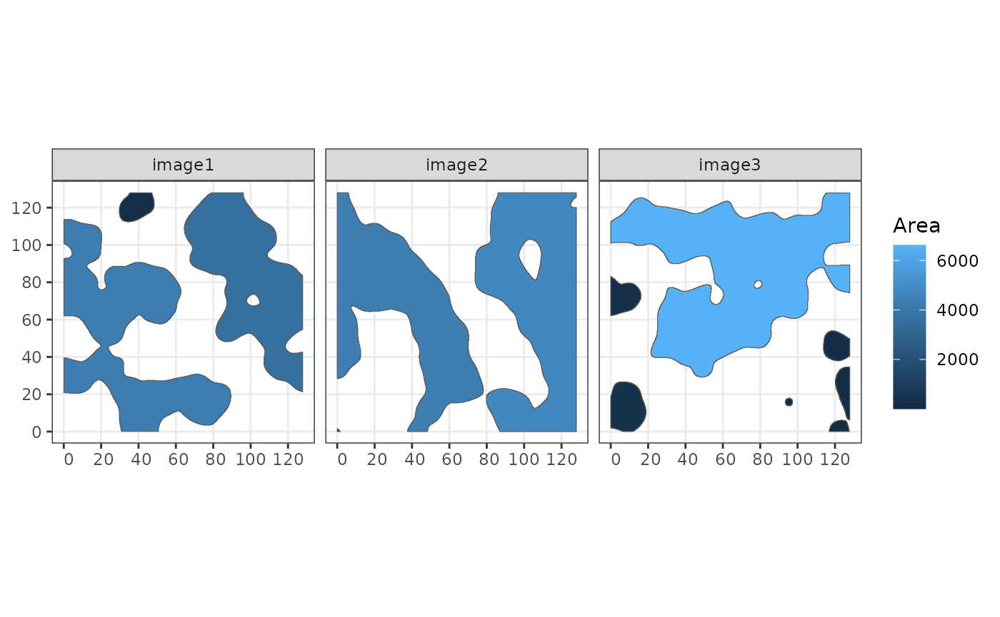
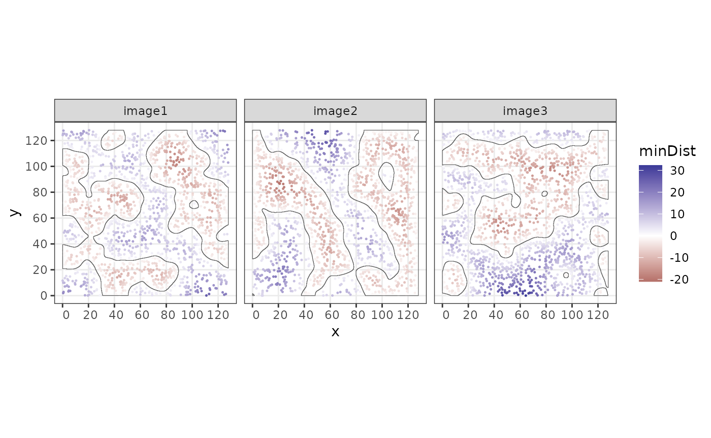
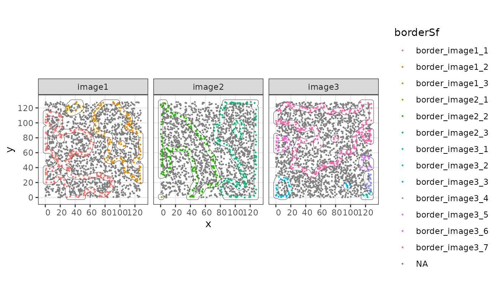

01 -- Overview of sosta
Samuel Gunz
Department of Molecular Life Sciences, University of Zurich, SwitzerlandSIB Swiss Institute of Bioinformatics, University of Zurich, Switzerlandsamuel.gunz@uzh.ch
Mark D. Robinson
Department of Molecular Life Sciences, University of Zurich, SwitzerlandSIB Swiss Institute of Bioinformatics, University of Zurich, SwitzerlandSource:
vignettes/StructureReconstructionVignette.Rmd
StructureReconstructionVignette.RmdAbstract
In this vignette we show different functionalities of
sosta. First we perform a density-based
reconstruction of structures based on spatial coordinates. Next,
we will calcuate different metrics on the structure and cell
level.
Installation
The sosta package can be installed from Bioconductor as follows:
if (!requireNamespace("BiocManager")) {
install.packages("BiocManager")
}
BiocManager::install("sosta")Introduction
As an example, we will load an simulated dataset with three images and three cell types A, B and C, stored as a SpatialExperiment object:
# load the data
data("sostaSPE")
sostaSPE
#> class: SpatialExperiment
#> dim: 0 5641
#> metadata(0):
#> assays(0):
#> rownames: NULL
#> rowData names(0):
#> colnames: NULL
#> colData names(3): cellType imageName sample_id
#> reducedDimNames(0):
#> mainExpName: NULL
#> altExpNames(0):
#> spatialCoords names(2) : x y
#> imgData names(0):
cbind(colData(sostaSPE), spatialCoords(sostaSPE)) |>
as.data.frame() |>
ggplot(aes(x = x, y = y, color = cellType)) +
geom_point(size = 0.25) +
facet_wrap(~imageName) +
coord_equal()
The goal is to reconstruct, or segment, the cellular “structures” given by cell type A.
Structure reconstruction
Reconstruction of structures for one image
In this example, we will reconstruct cellular structures based on the point pattern density of the cells of type A. We will start with estimating parameters that are used for reconstruction afterwards. For one image, this can be illustrated as follows:
shapeIntensityImage(
sostaSPE,
marks = "cellType",
imageCol = "imageName",
imageId = "image1",
markSelect = "A"
)
We see the pixel-wise density image on the left and a histogram of
the intensity values on the right. The estimated threshold is roughly
the mean between the two modes of the (truncated) pixel intensity
distribution. The dimensions of the pixel image are specified on the
bottom left. The dimensions correspond to the density image, setting a
higher value for the dim parameter will result in a higher
resolution density image but will not change how many points are within
a pixel. This can be changed by varying the smoothing parameter
(bndw).
This was done for one image. The function
estimateReconstructionParametersSPE returns two plots with
the estimated parameters for each image in the dataset. The parameter
bndw is the bandwidth parameter that is used for estimating
the intensity profile of the point pattern. The parameter
thres is the estimated parameter for the density threshold
for reconstruction.
n <- estimateReconstructionParametersSPE(
sostaSPE,
marks = "cellType",
imageCol = "imageName",
markSelect = "A",
plotHist = TRUE
)
We will use the mean of the two estimated vectors as our parameters.We now use the function reconstructShapeDensity to
segment the cell-type-A structure into regions. The result is a
collection of sf polygons (Pebesma 2018).
(struct <- reconstructShapeDensityImage(
sostaSPE,
marks = "cellType",
imageCol = "imageName",
imageId = "image1",
markSelect = "A",
bndw = bndwSPE,
dim = 500,
thres = thresSPE
))
#> Simple feature collection with 3 features and 0 fields
#> Geometry type: POLYGON
#> Dimension: XY
#> Bounding box: xmin: 0.1061074 ymin: 0.1104626 xmax: 127.8393 ymax: 127.9601
#> CRS: NA
#> sostaPolygon
#> 1 POLYGON ((3.938104 113.6409...
#> 2 POLYGON ((96.41697 125.6588...
#> 3 POLYGON ((47.11194 127.4487...Let’s plot both the points and the segmented polygons.
cbind(
colData(sostaSPE[, sostaSPE$imageName == "image1"]),
spatialCoords(sostaSPE[, sostaSPE$imageName == "image1"])
) |>
as.data.frame() |>
ggplot(aes(x = x, y = y, color = cellType)) +
geom_point(size = 0.5) +
facet_wrap(~imageName) +
coord_equal() +
geom_sf(
data = struct,
fill = NA,
color = "darkblue",
inherit.aes = FALSE, # this is important
linewidth = 0.75
)
#> Coordinate system already present.
#> ℹ Adding new coordinate system, which will replace the existing one.If no arguments are given, the function
reconstructShapeDensityImage estimates the reconstruction
parameters internally. The bandwidth is estimated using cross validation
using the function bw.diggle of the spatstat.explore
package. The threshold is estimated by taking the mean between the two
modes of the pixel intensity distribution as illustrated above.
struct2 <- reconstructShapeDensityImage(
sostaSPE,
marks = "cellType",
imageCol = "imageName",
imageId = "image1",
markSelect = "A",
dim = 500
)
cbind(
colData(sostaSPE[, sostaSPE$imageName == "image1"]),
spatialCoords(sostaSPE[, sostaSPE$imageName == "image1"])
) |>
as.data.frame() |>
ggplot(aes(x = x, y = y, color = cellType)) +
geom_point(size = 0.5) +
facet_wrap(~imageName) +
coord_equal() +
geom_sf(
data = struct2,
fill = NA,
color = "darkblue",
inherit.aes = FALSE, # this is important
linewidth = 0.75
)
#> Coordinate system already present.
#> ℹ Adding new coordinate system, which will replace the existing one.
Reconstruction of structures for all images
The function reconstructShapeDensitySPE reconstructs the
cell-type-A structure for all images in the spe object. We
use the estimated parameters from above.
allStructs <- reconstructShapeDensitySPE(
sostaSPE,
marks = "cellType",
imageCol = "imageName",
markSelect = "A",
bndw = bndwSPE,
thres = thresSPE,
nCores = 1
)Intersection with cells
Next, we assign cells in the SpatialExperiment object to
their specific structure. This is useful for later calculations. Such
that the function can match the cells to the correct structures, we need
the colnames to be defined in the
SpatialExperiment object.
# Define colnames by numbering the cells
colnames(sostaSPE) <- paste0("cell_", c(1:dim(sostaSPE)[2]))
assign <- assingCellsToStructures(sostaSPE, allStructs,
imageCol = "imageName", nCores = 1
)
# Assign using the correct order of the columns in the spe object
sostaSPE$structAssign <- assign[colnames(sostaSPE)]
cbind(colData(sostaSPE), spatialCoords(sostaSPE)) |>
as.data.frame() |>
ggplot(aes(x = x, y = y, color = structAssign)) +
geom_point(size = 0.25) +
facet_wrap(~imageName) +
coord_equal()
Structure level metrics
Proportion of cell types within structures
Using the function cellTypeProportions, we can estimate
the proportion of cell types within each individual structure.
cellTypeProportions(sostaSPE, "structAssign", "cellType")
#> A B C
#> image1_1 0.7996255 0.12172285 0.07865169
#> image1_2 0.8302326 0.08837209 0.08139535
#> image1_3 0.8333333 0.12500000 0.04166667
#> image2_2 0.8609626 0.09447415 0.04456328
#> image2_3 0.8770764 0.07475083 0.04817276
#> image3_1 0.8000000 0.20000000 0.00000000
#> image3_2 0.6200000 0.28000000 0.10000000
#> image3_3 1.0000000 0.00000000 0.00000000
#> image3_4 0.7894737 0.21052632 0.00000000
#> image3_5 0.8421053 0.10526316 0.05263158
#> image3_6 0.7307692 0.19230769 0.07692308
#> image3_7 0.8088235 0.10160428 0.08957219Shape Metrics
The function totalShapeMetrics calculates a set of
geometric metrics related to the shape of the structures.
shapeMetrics <- totalShapeMetrics(allStructs)
head(shapeMetrics)
#> image1_1 image1_2 image1_3 image2_1 image2_2
#> Area 4250.2792228 3574.6477409 226.9959779 1.3752774 4295.1222139
#> Compactness 0.1346764 0.2519490 0.6080376 0.4581489 0.1953486
#> Eccentricity 0.7875707 0.4641678 0.8363778 0.9999739 0.5647329
#> Circularity 0.4723775 0.5970360 0.8846882 0.5943689 0.4862921
#> Solidity 0.5963449 0.8051348 0.9769469 0.8936170 0.6614292
#> Curl 0.6224990 0.3932054 0.2617308 0.3922730 0.4574191
#> image2_3 image3_1 image3_2 image3_3 image3_4
#> Area 4746.6716180 51.8620571 417.5778496 12.6875650 145.71079859
#> Compactness 0.2150477 0.5718048 0.6331764 0.6342179 0.35221739
#> Eccentricity 0.4239889 0.5710073 0.7120634 0.9381917 0.27046967
#> Circularity 0.5075727 0.7502777 0.8892681 0.9053567 0.45173303
#> Solidity 0.7430950 0.9653074 0.9832153 0.9440389 0.96512887
#> Curl 0.4753033 0.1632771 0.1889006 0.2827801 0.09665593
#> image3_5 image3_6 image3_7
#> Area 186.3240867 234.8507530 6621.3393593
#> Compactness 0.6428357 0.5221272 0.1752898
#> Eccentricity 0.8736600 0.7688595 0.7542569
#> Circularity 0.9288492 0.7443243 0.5683033
#> Solidity 0.9787015 0.9320010 0.6863814
#> Curl 0.2514767 0.2936578 0.6032739
Cell level metrics
Distance to structure border
Using the function minBoundaryDistances, we can compute
the distance to the border structure. Negative values indicate that the
points lie inside the structure.
sostaSPE$minDist <- minBoundaryDistances(
spe = sostaSPE, imageCol = "imageName",
structColumn = "structAssign", allStructs = allStructs
)
cbind(colData(sostaSPE), spatialCoords(sostaSPE)) |>
as.data.frame() |>
ggplot(aes(x = x, y = y, color = minDist)) +
geom_point(size = 0.25) +
facet_wrap(~imageName) +
coord_equal() +
scale_colour_gradient2() +
geom_sf(
data = allStructs,
fill = NA,
inherit.aes = FALSE
) +
facet_wrap(~imageName)
#> Coordinate system already present.
#> ℹ Adding new coordinate system, which will replace the existing one.
This information can be used to define border cells by thresholding to a range of positive and negative values.
sostaSPE$border <- ifelse(abs(sostaSPE$minDist) < 3, TRUE, FALSE)
cbind(colData(sostaSPE), spatialCoords(sostaSPE)) |>
as.data.frame() |>
ggplot(aes(x = x, y = y, color = border)) +
geom_point(size = 0.25) +
facet_wrap(~imageName) +
coord_equal() +
geom_sf(
data = allStructs,
fill = NA,
inherit.aes = FALSE
) +
facet_wrap(~imageName)
#> Coordinate system already present.
#> ℹ Adding new coordinate system, which will replace the existing one.
Alternatively, borders can be defined using
st_difference and st_buffer on the structure
object. In this case we will have an sf polygon that
correspond to the border region.
borders <- lapply(
st_geometry(allStructs),
\(x) st_difference(st_buffer(x, 3), st_buffer(x, -3))
) |>
st_as_sfc() |>
st_as_sf() # both functions needed for proper conversion
borders$imageName <- allStructs$imageName
borders$borderID <- paste0("border_", allStructs$structID)
borderAssign <- assingCellsToStructures(sostaSPE,
borders,
imageCol = "imageName",
uniqueId = "borderID",
nCores = 1
)
# Assign using the correct order of the columns in the spe object
sostaSPE$borderSf <- borderAssign[colnames(sostaSPE)]
cbind(colData(sostaSPE), spatialCoords(sostaSPE)) |>
as.data.frame() |>
ggplot(aes(x = x, y = y, color = borderSf)) +
geom_point(size = 0.25) +
facet_wrap(~imageName) +
coord_equal() +
geom_sf(
data = borders,
fill = NA,
inherit.aes = FALSE
) +
facet_wrap(~imageName)
#> Coordinate system already present.
#> ℹ Adding new coordinate system, which will replace the existing one.
Session Info
sessionInfo()
#> R version 4.5.1 (2025-06-13)
#> Platform: x86_64-pc-linux-gnu
#> Running under: Ubuntu 24.04.3 LTS
#>
#> Matrix products: default
#> BLAS: /usr/lib/x86_64-linux-gnu/openblas-pthread/libblas.so.3
#> LAPACK: /usr/lib/x86_64-linux-gnu/openblas-pthread/libopenblasp-r0.3.26.so; LAPACK version 3.12.0
#>
#> locale:
#> [1] LC_CTYPE=C.UTF-8 LC_NUMERIC=C LC_TIME=C.UTF-8
#> [4] LC_COLLATE=C.UTF-8 LC_MONETARY=C.UTF-8 LC_MESSAGES=C.UTF-8
#> [7] LC_PAPER=C.UTF-8 LC_NAME=C LC_ADDRESS=C
#> [10] LC_TELEPHONE=C LC_MEASUREMENT=C.UTF-8 LC_IDENTIFICATION=C
#>
#> time zone: UTC
#> tzcode source: system (glibc)
#>
#> attached base packages:
#> [1] stats4 stats graphics grDevices utils datasets methods
#> [8] base
#>
#> other attached packages:
#> [1] SpatialExperiment_1.18.1 SingleCellExperiment_1.30.1
#> [3] SummarizedExperiment_1.38.1 Biobase_2.68.0
#> [5] GenomicRanges_1.60.0 GenomeInfoDb_1.44.3
#> [7] IRanges_2.42.0 S4Vectors_0.46.0
#> [9] BiocGenerics_0.54.1 generics_0.1.4
#> [11] MatrixGenerics_1.20.0 matrixStats_1.5.0
#> [13] sf_1.0-21 ggplot2_4.0.0
#> [15] tidyr_1.3.1 dplyr_1.1.4
#> [17] sosta_1.1.4 BiocStyle_2.36.0
#>
#> loaded via a namespace (and not attached):
#> [1] DBI_1.2.3 bitops_1.0-9 deldir_2.0-4
#> [4] rlang_1.1.6 magrittr_2.0.4 e1071_1.7-16
#> [7] compiler_4.5.1 spatstat.geom_3.6-0 png_0.1-8
#> [10] systemfonts_1.3.1 fftwtools_0.9-11 vctrs_0.6.5
#> [13] pkgconfig_2.0.3 crayon_1.5.3 fastmap_1.2.0
#> [16] magick_2.9.0 XVector_0.48.0 labeling_0.4.3
#> [19] rmarkdown_2.30 UCSC.utils_1.4.0 ragg_1.5.0
#> [22] purrr_1.1.0 xfun_0.53 cachem_1.1.0
#> [25] jsonlite_2.0.0 goftest_1.2-3 DelayedArray_0.34.1
#> [28] spatstat.utils_3.2-0 jpeg_0.1-11 tiff_0.1-12
#> [31] terra_1.8-70 parallel_4.5.1 R6_2.6.1
#> [34] bslib_0.9.0 RColorBrewer_1.1-3 spatstat.data_3.1-9
#> [37] spatstat.univar_3.1-4 jquerylib_0.1.4 Rcpp_1.1.0
#> [40] bookdown_0.45 knitr_1.50 tensor_1.5.1
#> [43] Matrix_1.7-3 tidyselect_1.2.1 abind_1.4-8
#> [46] yaml_2.3.10 EBImage_4.50.0 codetools_0.2-20
#> [49] spatstat.random_3.4-2 spatstat.explore_3.5-3 lattice_0.22-7
#> [52] tibble_3.3.0 withr_3.0.2 S7_0.2.0
#> [55] evaluate_1.0.5 desc_1.4.3 units_1.0-0
#> [58] proxy_0.4-27 polyclip_1.10-7 pillar_1.11.1
#> [61] BiocManager_1.30.26 KernSmooth_2.23-26 smoothr_1.2.1
#> [64] RCurl_1.98-1.17 scales_1.4.0 class_7.3-23
#> [67] glue_1.8.0 tools_4.5.1 locfit_1.5-9.12
#> [70] fs_1.6.6 grid_4.5.1 nlme_3.1-168
#> [73] GenomeInfoDbData_1.2.14 patchwork_1.3.2 cli_3.6.5
#> [76] spatstat.sparse_3.1-0 textshaping_1.0.4 viridisLite_0.4.2
#> [79] S4Arrays_1.8.1 gtable_0.3.6 sass_0.4.10
#> [82] digest_0.6.37 classInt_0.4-11 SparseArray_1.8.1
#> [85] rjson_0.2.23 htmlwidgets_1.6.4 farver_2.1.2
#> [88] htmltools_0.5.8.1 pkgdown_2.1.3 lifecycle_1.0.4
#> [91] httr_1.4.7